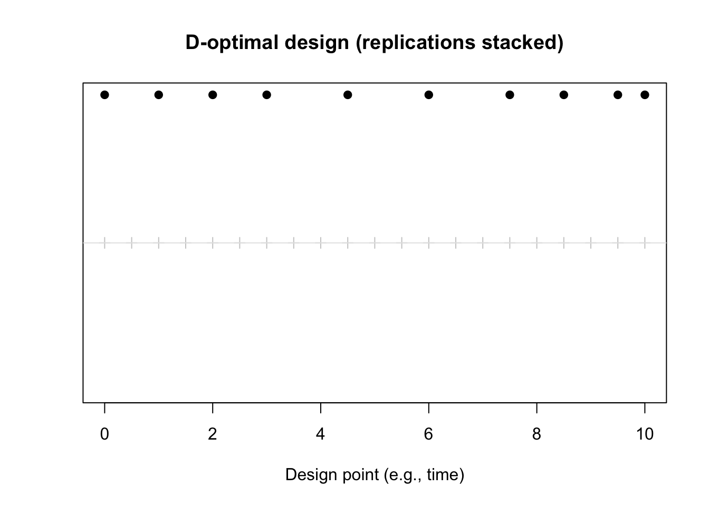

1Constructing D-Optimal Designs for Correlated Data
Published
March 2, 2026
This user guide focuses on constructing D-optimal exact designs for linear regression models with correlated observations when the covariance structure is known. Unlike classical optimal design problems with independent errors, correlated data require modifying the Fisher Information Matrix (FIM) and abandoning continuous design theory. The guide provides a step-by-step workflow that pairs the underlying ideas with practical R implementation—so readers with a working knowledge of R can identify, compute, and evaluate D-optimal designs in their own setting (López-Fidalgo and Wong 2026).
What you will learn: how to recognize when correlation invalidates standard design tools; how to write down the linear model and design space in R; how to turn a correlation model (e.g., AR(1), exponential in time or space) into a covariance matrix \(\Sigma(\xi)\); how to build the FIM \(M(\xi) = X(\xi)^\top \Sigma(\xi)^{-1} X(\xi)\) and why it differs from the usual \(X^\top X\); how to search over candidate exact designs to (approximately) maximize \(\det M(\xi)\); and how to evaluate designs via relative D-efficiency when equivalence theorems no longer apply.
Scope: We assume a linear model with normally distributed, homoscedastic responses and a known correlation structure. The design space is a user-specified compact set of candidate points (e.g., a finite grid of times or spatial locations). We do not cover nonlinear models (where the FIM depends on unknown parameters), model discrimination (KL-optimality), or general virtual-noise algorithms—only the core D-optimal exact-design case.
1.1 Prerequisites
Software: A working installation of R (e.g., R 4.x) and an editor or IDE (RStudio, VS Code, or similar). Ability to run scripts and install packages if needed.
R skills: Comfort writing small R functions, using vectors and matrices, and inspecting output (e.g., summary(), printing matrices).
Statistical knowledge: Familiarity with linear regression (design matrices, coefficients, residuals), variance–covariance matrices, and the idea that D-optimality maximizes precision of parameter estimates. A high-level grasp of the Fisher Information Matrix is helpful but not required to follow the steps.
For a more detailed breakdown of conceptual and problem-specific prerequisites, see the Task Analysis appendix.
1.2 Workflow overview
The guide is organized into seven steps, in order:
Formalize the model and design space: Write down the linear model and candidate design points; build \(X(\xi)\) in R.
Define the covariance structure: Choose a correlation model and implement a function that returns \(\Sigma(\xi)\).
Construct the Fisher Information Matrix: Implement \(M(\xi) = X(\xi)^\top \Sigma(\xi)^{-1} X(\xi)\) and \(\log\det M(\xi)\).
Specify the space of exact designs: Represent exact designs as vectors of design points (replications = repeated entries).
Search for D-optimal designs: Run an exchange algorithm (and optionally multiple restarts) to maximize \(\log\det M(\xi)\).
Evaluate and compare designs: Report \(\log\det M(\xi)\), relative D-efficiency vs. a baseline, and optional standard errors.
Document and export the design: Summarize the design in a table and record code and settings for reproducibility.
Input
Process
Output
Linear model, design space \(\mathcal{X}\), covariance structure
A complete, runnable R script that implements this workflow is provided in annotated_r_example.R in this project. It uses the same steps (design space, \(X(\xi)\), \(\Sigma(\xi)\), \(\log\det M(\xi)\), exchange search, relative D-efficiency) with both AR(1) and exponential correlation, a configurable regression basis (e.g. intercept + slope + quadratic), and a multi-start search. You can edit the “User settings” block at the top and run the script to reproduce the workflow or adapt it to your own model and design space.
1.3 When correlation matters
Why would you want to complete this task? If you are planning a study with correlated observations (e.g., repeated measurements over time, spatial sampling, or clustered data), choosing when and where to measure using standard “independent errors” design tools can waste a large fraction of your information. Efficiency can drop to single-digit percentages when the true process is correlated but the design was chosen under an independence assumption. This guide gives you a practical workflow to construct designs that account for correlation, so you can get more precise parameter estimates—or the same precision with fewer observations—in settings where correlation matters.
For uncorrelated observations, the Fisher Information Matrix is additive over design points and, for a continuous design \(\xi\), takes the familiar form that leads to \(X^\top X\) (up to a scale) for exact designs. Optimal design theory then enjoys convexity and the General Equivalence Theorem (GET), which certifies optimality via directional derivatives.
For correlated observations, the FIM is nonadditive and depends on the exact design \(\xi\) and its covariance structure \(\Sigma(\xi)\). It is defined as
[ M() = X()^, ()^{-1} , X(), ]
where \(f(x)\) (or \(X\)) is the \(n\times p\) mean response structure (design matrix), and \(\Sigma(\xi)\) is the \(n\times n\) covariance matrix of the observations under design \(\xi\), with entries driven by the correlation between design points. Once correlation is present, continuous design theory and the GET no longer apply in the same way; you must work with exact designs (finite sets of points with integer replication) and rely on computational search rather than a closed-form optimality check (López-Fidalgo and Wong 2026). Ignoring correlation can be costly—e.g., efficiency can drop to single-digit percentages when the true process is correlated but the design was chosen under an independence assumption.
1.4 Data and design points
This guide does not use a single fixed dataset; instead, the “data” are synthetic design points that represent where and how many times you will observe. In the running example we use a one-dimensional grid of times (e.g., 0 to 10 in steps of 0.5) as the candidate design space. Each design point is a time (or spatial location) at which you plan to take a measurement; replications correspond to repeated observations at the same point. You should replace the example grid with your own feasible set of times or locations (e.g., from study protocol or logistical constraints). The methods assume that responses will be approximately normally distributed with homoscedastic variance and that the covariance structure (e.g., AR(1) or exponential) is known or fixed from prior work or a pilot study.
with \(\beta\) the parameter vector you care about and \(\xi\) the design (the set of design points and their replications). Define:
The parameter vector \(\beta\) (e.g., intercept and slope for a simple linear regression in time).
The candidate design space \(\mathcal{X}\): a finite grid of allowed points (e.g., time points or spatial coordinates). In practice this is often a compact subset of \(\mathbb{R}^d\).
In R, encode the design as a vector of design points (with replications implied by repeated entries). Build the design matrix \(X(\xi)\) by evaluating the model regressors at those points. The example below uses a simple linear trend in one variable (e.g., time).
# Candidate design space: finite grid (e.g., times 0 to 10)grid <-seq(0, 10, by =0.5)# Model: E(y) = beta0 + beta1 * t => X has columns (1, t)make_X <-function(design_points) {# design_points: vector of times (or coordinates) with replications# by repeating a value you give it that many observations t <- design_pointsmodel.matrix(~ t)}# Example: 5 observations at times 0, 2, 5, 5, 10example_design_pts <-c(0, 2, 5, 5, 10)X_ex <-make_X(example_design_pts)X_ex
So \(X(\xi)\) is just the usual model matrix for your linear model evaluated at the chosen design points. In annotated_r_example.R, the design matrix is built by a user-defined regression_basis() (e.g. cbind(1, x, x^2) for a quadratic model); you can change that function to match your regression structure.
You should now be able to plug in your own regression basis and candidate grid and build \(X(\xi)\) for any proposed design vector.
1.6 Step 2. Define the covariance structure
Choose a parametric correlation model so that, for any set of design points, you can form the covariance matrix \(\Sigma(\xi)\). The review discusses several positive-definite families (López-Fidalgo and Wong 2026); two common choices are:
Exponential (with optional nugget): \(C(d) = \sigma^2\bigl(\nu\,\mathbf{1}_{\{d=0\}} + (1-\nu)\, e^{-d/\phi}\bigr)\), where \(d\) is distance (in time or space), \(\phi\) is the range, and \(\nu\) is the nugget (variance at zero distance). The nugget helps avoid singular or ill-conditioned \(\Sigma\) and can prevent optimal designs from collapsing to too few distinct points.
AR(1) (in time): \(\Sigma_{ij} = \sigma^2 \rho^{|t_i - t_j|}\), with \(\rho \in (0,1)\).
Implement an R function that, given a vector of design points, returns \(\Sigma(\xi)\). Below we use an exponential correlation in one dimension (e.g., time); for spatial designs you would use distance between pairs of points.
If all eigenvalues are positive and the condition number (max/min eigenvalue) is not huge, \(\Sigma(\xi)\) is numerically well-behaved. For other families (e.g., Matérn, Dagum, Cauchy), you would replace the correlation kernel with the corresponding formula; the important part is that the function maps design points to a positive-definite matrix. The script annotated_r_example.R implements both AR(1) and exponential correlation in build_Sigma() with a model argument; you can switch between them or add other structures there.
You should now be able to pass any vector of design points to your covariance function and obtain a valid \(\Sigma(\xi)\).
1.7 Step 3. Construct the Fisher Information Matrix under correlation
The FIM for the correlated linear model is
[ M() = X()(){-1} X(). ]
Compute it in R using the Cholesky factorization of \(\Sigma(\xi)\) so you never form \(\Sigma^{-1}\) explicitly (more stable and faster). Then define a function that returns \(\log\det M(\xi)\), which is what we will maximize (equivalent to maximizing \(\det M(\xi)\) and more stable numerically).
# M = X' Sigma^{-1} X via solve(Sigma, X) = Sigma^{-1} X# Using Cholesky: Sigma = L L', solve(Sigma, X) = solve(L', solve(L, X))log_det_M <-function(design_points, make_X, make_Sigma, ...) { X <-make_X(design_points) Sigma <-make_Sigma(design_points, ...) n <-nrow(X) p <-ncol(X)if (n < p) return(-Inf)# Sigma^{-1} X W <-solve(Sigma, X) M <-crossprod(X, W)log(det(M))}# Examplelog_det_M(example_design_pts, make_X, make_Sigma,sigma2 = sigma2, phi = phi, nugget = nugget)
[1] 5.052924
If you only need \(\log\det M(\xi)\) for the search, the above is enough. If you also need \(M(\xi)\) itself (e.g., for standard errors), compute it as M <- crossprod(X, solve(Sigma, X)). In annotated_r_example.R, logdet_D_criterion() uses Cholesky on both \(\Sigma\) and \(M\) for stability and returns \(-\infty\) for rank-deficient \(X\) or non–positive-definite \(\Sigma\), so the search automatically rejects invalid designs.
You should now be able to evaluate \(\log\det M(\xi)\) for any design; this function is what the search in Step 5 will maximize.
1.8 Step 4. Specify the space of exact designs
An exact design is a finite set of design points with integer replication counts—i.e., a multiset of points from your candidate grid whose total size equals your sample size \(n\). In code, represent it as a vector of length \(n\) of design points (replications = repeated entries). The design space is the set of all such vectors whose entries lie in your candidate grid \(\mathcal{X}\).
grid <-seq(0, 10, by =0.5)n_obs <-10# One design = n_obs indices into grid (allows repeats)# Example: random initial designset.seed(42)idx_init <-sample(length(grid), size = n_obs, replace =TRUE)design_init <- grid[idx_init]sort(design_init)
[1] 0.0 1.5 1.5 2.0 3.0 4.5 7.0 8.0 8.0 8.5
You can also represent the design as a vector of replication counts over the grid (one count per grid point, summing to \(n\)); the indexing representation is convenient for swapping one point at a time during the exchange algorithm. annotated_r_example.R uses the same representation and provides random_design() and baseline_design() (e.g. roughly equally spaced) for initialization.
1.9 Step 5. Search for D-optimal designs
Because the General Equivalence Theorem does not apply, we search over exact designs by iteratively improving \(\log\det M(\xi)\). A simple and effective approach is an exchange algorithm (López-Fidalgo and Wong 2026):
Input: Initial design \(\xi^{(0)}\) (e.g., random or evenly spread), tolerance \(\tau\).
Iterate: For each support point in the current design, consider swapping it with a point from the candidate grid. Compute the change in the criterion (e.g., \(\log\det M(\xi)\)). Apply the swap that gives the largest improvement.
Termination: Stop when the relative change in the criterion is below \(\tau\) (or no improving swap exists).
Below is a minimal R implementation: one pass over the design points, trying swaps with the full grid and accepting the first improvement (greedy). You can extend it to multiple restarts or to “best improvement” per iteration for stability.
For larger problems, use a coarser grid for the inner “best swap” search, or use metaheuristics (e.g., simulated annealing, genetic algorithms) as discussed in the review (López-Fidalgo and Wong 2026). The script annotated_r_example.R implements exchange_search() (one-point-at-a-time swaps over the candidate set) and multi_start_search() (multiple random restarts) so you can run the same algorithm from the command line and tune n_restarts and max_iter_per_restart in the “User settings” block.
1.10 Step 6. Evaluate and compare designs
Evaluate the chosen design by (i) reporting \(\log\det M(\xi)\), (ii) comparing to a baseline (e.g., equally spaced or uniform random) via relative D-efficiency, and (iii) optionally inspecting approximate standard errors for \(\beta\).
Relative D-efficiency of design \(\xi\) versus a reference design \(\xi_0\) is
where \(p\) is the number of parameters. So \(\exp((\log\det M(\xi) - \log\det M(\xi_0))/p)\) gives the ratio; values > 1 mean \(\xi\) is better than \(\xi_0\).
# Approximate SEs from M^{-1} (scale by sigma if known)Sigma_opt <-make_Sigma(result$design, sigma2, phi, nugget)X_opt <-make_X(result$design)M_opt <-crossprod(X_opt, solve(Sigma_opt, X_opt))sqrt(diag(solve(M_opt)))
(Intercept) t
0.8524249 0.1330164
Optionally, plot the design (e.g., sampling times or locations) to check that it is scientifically and practically reasonable. In annotated_r_example.R, relative_D_efficiency() implements the same formula for any two designs, and the script prints baseline vs. best design and their relative D-efficiencies; it also includes optional plots of the criterion trajectory and the selected design points (with replications stacked for visibility).
1.11 Step 7. Document and export the design
Summarize the chosen design in a table or data frame suitable for running the experiment, and record the R code and parameter settings so the process is reproducible.
The table above lists each distinct design point (time or location) and its replications (how many observations to take at that point). Use it when running the experiment: schedule that many measurements at each listed point. Save the design and key inputs (grid, sample size, covariance parameters, criterion value) to a file or script so you can reproduce the design later. annotated_r_example.R ends by building a final_design_table (design points and replicate counts) and printing it for use when running the experiment; you can write that table to CSV or incorporate it into your study protocol.
Figure Figure 1.1 helps you check that the selected design is practically reasonable (e.g., not overly clustered at one end of the grid). Below, the gray ticks show the candidate grid; filled points show the chosen design, with replications stacked vertically at each location.
plot(grid, rep(0, length(grid)), pch =3, col ="gray80",xlab ="Design point (e.g., time)", ylab ="",yaxt ="n", main ="D-optimal design (replications stacked)")abline(h =0, col ="gray90")tab <-table(result$design)for (xv inas.numeric(names(tab))) { reps <-as.integer(tab[as.character(xv)])points(rep(xv, reps), seq_len(reps), pch =19)}

Figure 1.1: Selected design points (replications shown by vertical stack). Gray ticks are the candidate grid.
1.12 Additional resources
López-Fidalgo and Wong(López-Fidalgo and Wong 2026): The review this guide is based on; it covers theory, other optimality criteria, and metaheuristic search in more depth.
Optimal design in general: Introductory texts on experimental design (e.g., Atkinson and Donev (Atkinson, Donev, and Tobias 2007)) explain D-optimality and exchange algorithms for uncorrelated data; the formulas here extend those ideas to the correlated case.
Correlation structures in R: If you need to fit models with AR(1), exponential, or spatial correlation (e.g., for pilot data), see the nlme and gls documentation or Pinheiro and Bates (“Fitting Nonlinear Mixed-Effects Models” 2000) for specifying correlation structures in R.
Quarto books: For building and customizing this report, see the Quarto book documentation (Posit PBC 2024).
1.13 Reproducibility
This guide was prepared so it can be run on another machine with R and Quarto installed. To reproduce the report: install R (tested with R 4.x), install Quarto, then in the project directory run quarto render . (or use Build in RStudio). All code in this document uses base R only; no extra packages are required. You can also run the standalone script annotated_r_example.R in R to reproduce the full workflow (edit the “User settings” block at the top for your own model and design space).
1.14 Summary and practical tips
Design space: Keep the candidate grid \(\mathcal{X}\) compact and aligned with feasible times or locations; very dense grids increase run time.
Covariance: Use a nugget if \(\Sigma(\xi)\) is ill-conditioned; it also helps avoid designs that collapse to too few distinct points.
Numerics: Use Cholesky-based solves for \(\Sigma^{-1}X\) and maximize \(\log\det M(\xi)\) rather than \(\det M(\xi)\).
Search: Run the exchange algorithm from a few different initial designs; if results are similar, the solution is more trustworthy.
Interpretation: Report relative D-efficiency versus a simple baseline so stakeholders see the gain from optimal design under correlation.
For nonlinear models, the FIM depends on unknown parameters \(\theta\); the review discusses locally optimal, Bayesian, and minimax designs (López-Fidalgo and Wong 2026). For model discrimination, a KL-optimal criterion and corresponding exchange algorithm can be used; the virtual-noise approach is another tool for concentrating design mass. This guide stays with the linear, known-covariance case so you can get a working pipeline in R and then extend it as needed.
“Fitting Nonlinear Mixed-Effects Models.” 2000. In Mixed-Effects Models in s and s-PLUS, 337–421. New York, NY: Springer New York. https://doi.org/10.1007/0-387-22747-4_8.